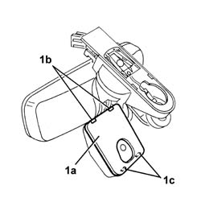
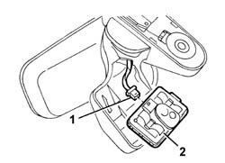

5010D36 DEMISTING SENSOR - R.R. following electrical equipment check
- Path
- Procedures > 50 AUXILIARY UNITS > 5010 CLIMATE CONTROL - MISCELLANEOUS > 5010D air temperature recording system > 5010D36 DEMISTING SENSOR - R.R. following electrical equipment check
- Kind
- repair procedure (removal / refitting; the operation number is the code)
- Applies to
- all engines; all production periods
- Interactive page
- https://sloeber94.github.io/elrnDB-a156/en/#/3238271
Applies to: all engines; production: da 03/02 a 09/03, da 10/03
 Removing
Removing
 Refitting
Refitting7065C58 SUPPORT for interior rear view mirror, rain sensor and demisting sensor. R.R.
1. Remove cover (1a) from retainers (1b) and remove.

Applies to: all engines; production: da 03/02 a 09/03, da 10/03
1. Disconnect the electrical connections.
2. Recover the demisting sensor.

Applies to: all engines; production: da 03/02 a 09/03, da 10/03
Refitting
RemovingCheck that the demisting sensor is not damaged.
Connect the demisting sensor electrical connection.
Refit the cover and do up the retainers.
7065C58 SUPPORT for interior rear view mirror, rain sensor and demisting sensor. R.R.